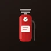
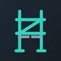
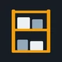
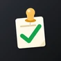

Prüfpflichten im Betrieb — verständlich erklärt
Wer muss was wie oft prüfen, wer darf prüfen und was gehört ins Protokoll? Unsere Ratgeber fassen die Vorschriften für typische Prüfpflichten in Handwerk, Facility-Management und Kommunen zusammen — mit Fristen, Checklisten und Antworten auf die häufigsten Fragen.
Alle Prüffristen in einer Tabelle (Deutschland & Österreich) →
Elektrik & Brandschutz
DGUV V3 Prüfung ortsveränderlicher Geräte
Fristen, Messwerte und Prüfprotokoll für elektrische Betriebsmittel.
PrüfDexDGUV V3 Prüffristen
Richtwerte je Einsatzumgebung als übersichtliche Tabelle.
PrüfDexE-Check oder DGUV V3?
Der Unterschied, Prüffristen für Anlagen und Geräte, Tipps für den Auftrag.
PrüfDex
Feuerlöscher prüfen
Fristen nach ASR A2.2 und DIN 14406-4, Sachkundiger, Dokumentation.
FeuerDexFeuerlöscher-Überprüfung in Österreich
Alle zwei Jahre nach § 13 AStV: wer prüft, was der Aufkleber ersetzt.
FeuerDexAbsturz, Leitern & Gerüste
Leitern & Tritte prüfen
Fristen, befähigte Person und Dokumentation nach BetrSichV und DGUV I 208-016.
LeiterDexLeiter-Prüfprotokoll: Vorlage
Pflichtangaben, Muster und PDF-Vorlage zum Ausdrucken.
LeiterDexArbeiten auf Leitern
2-m- und 5-m-Regel, max. 2 Stunden, Stufen statt Sprossen (TRBS 2121-2).
LeiterDex
Gerüstprüfung nach TRBS 2121-1
Prüfung nach Montage, Kontrolle vor Benutzung, Prüfung nach Sturm.
GerüstDexGerüstprüfung in Österreich
§ 61 BauV: Abnahme durch den Aufsteller, Prüfung durch den Benützer wöchentlich oder monatlich, Vormerke.
GerüstDexPSA gegen Absturz prüfen
Jährliche Prüfung, Sachkundiger nach DGUV G 312-906, Ablegereife.
GurtDexGebäude, Lager & Außenanlagen
Torprüfung nach ASR A1.7
Kraftbetätigte Tore und Türen wiederkehrend prüfen (Richtwert: mindestens jährlich) — Prüfbuch und Checkliste.
ToreDex
Regalinspektion nach DIN EN 15635
Fristen, Experteninspektion und Dokumentation im Lager.
RegalDexFachlast und Feldlast
Was das Belastungsschild am Regal bedeutet.
RegalDexAnschlagmittel prüfen
Ketten, Hebebänder und Zurrgurte: Fristen, befähigte Person, Ablegereife.
HebeDexZurrgurte prüfen
Ablegereife nach DIN EN 12195-2, Etikett und jährliche Prüfung.
HebeDexSpielplatzkontrolle nach DIN EN 1176
Pflicht, Fristen und die drei Inspektionsarten.
SpielDexSpielplatz-Sichtkontrolle: Checkliste
12 Prüfpunkte für den wöchentlichen Rundgang nach DIN EN 1176-7.
SpielDexRäum- und Streupflicht
Wer haftet — und wie man den Winterdienst lückenlos dokumentiert.
WinterDexStreuprotokoll-Vorlage
Räum- und Streuprotokoll zum Ausdrucken — mit allen Pflichtangaben je Einsatz.
WinterDexStreupflicht: Uhrzeiten
Ab wann und bis wann geräumt sein muss — mit Beispielen aus großen Städten.
WinterDexSchneeräumpflicht in Österreich
§ 93 StVO einfach erklärt: Gehsteig, 6 bis 22 Uhr, Haftung.
WinterDexRäumpflicht für Mieter
Wann Mieter Schnee schippen müssen, wann nicht — und was bei Urlaub oder Krankheit gilt.
WinterDexGlatteis-Unfall: Haftung
Wer nach einem Sturz zahlt, was bewiesen werden muss und warum Protokolle zählen.
WinterDexStreusalz: erlaubt oder verboten?
Regeln in München, Stuttgart, Hamburg, Berlin, Österreich und Basel – mit Ausnahmen und Alternativen.
WinterDexDachlawinen und Eiszapfen
Pflichten der Eigentümer: § 93 StVO, Schneefanggitter laut Bauordnung, Checkliste.
WinterDexWinterdienst für Hausverwaltungen
Verantwortung bei Vergabe, Kontrolle der Dienstleister und Nachweis je Objekt.
WinterDexWinterdienst abrechnen
Pauschale oder nach Einsatz, was in die Rechnung gehört und welcher Nachweis dazu.
WinterDexWinterdienst-Nachweis anfordern
Vertragsklausel, Mustertext und Prüfliste für Hausverwaltungen.
WinterDexWinterdienst-Tourenplan
Reihenfolge nach Uhrzeit, Kontrollrunden, Vertretung und Nachweis je Runde.
WinterDexGlätte ohne Schnee
Reifglätte, überfrierende Nässe, Eisregen: wann gestreut werden muss.
WinterDexStreupflicht auf Parkplatz und Firmengelände
Was der BGH für Kundenparkplätze verlangt und was für Wege der Beschäftigten gilt.
WinterDexWinterdienst in Gemeinden
Räum- und Streuplan mit Prioritäten, Bauhof-Organisation und Streubuch.
WinterDexBaumkontrolle & Verkehrssicherung
Kontrollpflichten für Kommunen und Grundstückseigentümer.
BaumDexFuhrpark
UVV-Prüfung für Firmenfahrzeuge
Pflichten des Fuhrparks nach DGUV Vorschrift 70.
KfzDexFührerscheinkontrolle im Betrieb
Halterpflicht nach § 21 StVG, übliches Intervall und Dokumentation.
KfzDexFahrerunterweisung im Betrieb
Jährliche Pflicht, 10 Themen und was in den Nachweis gehört.
SchutzDexFahrtenbuch richtig führen
Anforderungen, Pflichtangaben und Alternativen.
TourDexArbeitsschutz & Dokumentation
Jährliche Unterweisung im Arbeitsschutz
Pflicht, Inhalte und Nachweis nach § 12 ArbSchG und § 4 DGUV Vorschrift 1.
SchutzDexGefährdungsbeurteilung erstellen
Pflicht, 7 Schritte und Muster nach § 5 ArbSchG.
SchutzDexUnterweisungsthemen
Was in die jährliche Unterweisung gehört.
SchutzDexDigitale Unterweisung
Per App oder online: was erlaubt ist, Unterschrift, Nachweis und Wiederholung.
SchutzDexUnterweisung im Büro
Themen von Brandschutz bis Bildschirmarbeit, Ersthelfer, Homeoffice und Checkliste.
SchutzDexAufbewahrungsfristen für Geschäftsunterlagen
Übersicht mit Tabelle, inklusive verkürzter Fristen.
DokuDexBaustellendokumentation
Was festgehalten werden sollte — und warum.
CraftDexBetrieb & Organisation

Arbeitsauftrag im Handwerk
Was auf den Auftragszettel gehört — Stundenzettel und Regiebericht.
LaufzettelLeistungsnachweis Hausbetreuung
Soll/Ist, Turnus, Fotos und Mängel für die Hausverwaltung.
ObjektDexDie Ratgeber geben die genannten Vorschriften allgemein verständlich wieder und ersetzen keine Rechtsberatung. Maßgeblich sind die jeweils aktuellen Fassungen sowie die betriebliche Gefährdungsbeurteilung.